Surface parameters inference¶
This notebooks presents the different tools that ArchPy offers to infer the variogram of the surfaces. It goes from manual tools where the variogram have to be adjusted manually using sliders to automatic inference where little or no user intervention is required.
[1]:
import numpy as np
import matplotlib
from matplotlib import colors
import matplotlib.pyplot as plt
import geone
import geone.covModel as gcm
import geone.imgplot3d as imgplt3
import pyvista as pv
import sys
sys.path.append("../../")
#my modules
from ArchPy.base import *
from ArchPy.tpgs import *
[2]:
PD = Pile(name = "PD", seed = 10)
PB = Pile(name = "PB",seed=1)
P1 = Pile(name = "P1",seed=1)
[3]:
#grid
sx = 0.75
sy = 0.75
sz = .15
x1 = 100
y1 = 50
z1 = -6
x0 = 0
y0 = 0
z0 = -15
nx = 133
ny = 67
nz = 62
dimensions = (nx, ny, nz)
spacing = (sx, sy, sz)
origin = (x0, y0, z0)
[4]:
#units covmodel
covmodelD = gcm.CovModel2D(elem=[('cubic', {'w':0.6, 'r':[30,30]})])
covmodelD1 = gcm.CovModel2D(elem=[('cubic', {'w':0.2, 'r':[30,30]})])
covmodelC = gcm.CovModel2D(elem=[('cubic', {'w':0.2, 'r':[40,40]})])
covmodelB = gcm.CovModel2D(elem=[('cubic', {'w':0.6, 'r':[30,30]})])
covmodel_er = gcm.CovModel2D(elem=[('spherical', {'w':1, 'r':[50,50]})])
## facies covmodel
covmodel_SIS_C = gcm.CovModel3D(elem=[("exponential",{"w":.25,"r":[50,50,15]})],alpha=0,name="vario_SIS") # input variogram
covmodel_SIS_D = gcm.CovModel3D(elem=[("exponential",{"w":.25,"r":[25,25,25]})],alpha=0,name="vario_SIS") # input variogram
lst_covmodelC=[covmodel_SIS_C] # list of covmodels to pass at the function
lst_covmodelD=[covmodel_SIS_D]
#create Lithologies
dic_s_D = {"int_method" : "grf_ineq","covmodel" : covmodelD}
dic_f_D = {"f_method":"SubPile", "SubPile": PD}
D = Unit(name="D",order=1,ID = 1,color="gold",contact="onlap",surface=Surface(contact="onlap",dic_surf=dic_s_D)
,dic_facies=dic_f_D)
dic_s_C = {"int_method" : "grf_ineq","covmodel" : covmodelC}
dic_f_C = {"f_method" : "SIS","neig" : 10,"f_covmodel":covmodel_SIS_C}
C = Unit(name="C",order=2,ID = 2,color="blue",contact="onlap",dic_facies=dic_f_C,surface=Surface(dic_surf=dic_s_C,contact="onlap"))
dic_s_B = {"int_method" : "grf_ineq","covmodel" : covmodelB}
dic_f_B = {"f_method":"SubPile","SubPile":PB}
B = Unit(name="B",order=3,ID = 3,color="purple",contact="onlap",dic_facies=dic_f_B,surface=Surface(contact="onlap",dic_surf=dic_s_B))
dic_s_A = {"int_method":"grf_ineq","covmodel": covmodelB}
dic_f_A = {"f_method":"homogenous"}
A = Unit(name="A",order=5,ID = 5,color="red",contact="onlap",dic_facies=dic_f_A,surface=Surface(dic_surf = dic_s_A,contact="onlap"))
#Master pile
P1.add_unit([D,C,B,A])
# PB
ds_B3 = {"int_method":"grf_ineq","covmodel":covmodelB}
df_B3 = {"f_method":"SIS", "neig" : 10,"f_covmodel":covmodel_SIS_D}
B3 = Unit(name = "B3",order=1,ID = 6,color="forestgreen",surface=Surface(dic_surf=ds_B3,contact="onlap"),dic_facies=df_B3)
ds_B2 = {"int_method":"grf_ineq","covmodel":covmodelB}
df_B2 = {"f_method":"SIS","neig" : 10,"f_covmodel":covmodel_SIS_D}
B2 = Unit(name = "B2",order=2,ID = 7,color="limegreen",surface=Surface(dic_surf=ds_B2,contact="erode"),dic_facies=df_B2)
ds_B1 = {"int_method":"grf_ineq","covmodel":covmodelB}
df_B1 = {"f_method":"SIS","neig" : 10,"f_covmodel":covmodel_SIS_D}
B1 = Unit(name = "B1",order=3, ID = 8,color="palegreen",surface=Surface(dic_surf=ds_B1,contact="onlap"),dic_facies=df_B1)
## Subpile
PB.add_unit([B3,B2,B1])
# PD
ds_D2 = {"int_method":"grf_ineq","covmodel":covmodelD1}
df_D2 = {"f_method":"SIS","neig" : 20,"f_covmodel":covmodel_SIS_D}
D2 = Unit(name = "D2", order=1, ID = 9,color="darkgoldenrod",surface=Surface(dic_surf=ds_D2,contact="onlap"),dic_facies=df_D2)
ds_D1 = {"int_method":"grf_ineq","covmodel":covmodelD1}
df_D1 = {"f_method":"SIS","neig" : 20,"f_covmodel":covmodel_SIS_D}
D1 = Unit(name = "D1", order=2, ID = 10,color="yellow",surface=Surface(dic_surf=ds_D1,contact="onlap"),dic_facies=df_D1)
PD.add_unit([D2, D1])
Unit D: Surface added for interpolation
Unit C: covmodel for SIS added
Unit C: Surface added for interpolation
Unit B: Surface added for interpolation
Unit A: Surface added for interpolation
Stratigraphic unit D added ✅
Stratigraphic unit C added ✅
Stratigraphic unit B added ✅
Stratigraphic unit A added ✅
Unit B3: covmodel for SIS added
Unit B3: Surface added for interpolation
Unit B2: covmodel for SIS added
Unit B2: Surface added for interpolation
Unit B1: covmodel for SIS added
Unit B1: Surface added for interpolation
Stratigraphic unit B3 added ✅
Stratigraphic unit B2 added ✅
Stratigraphic unit B1 added ✅
Unit D2: covmodel for SIS added
Unit D2: Surface added for interpolation
Unit D1: covmodel for SIS added
Unit D1: Surface added for interpolation
Stratigraphic unit D2 added ✅
Stratigraphic unit D1 added ✅
[5]:
# covmodels for the property model
covmodelK = gcm.CovModel3D(elem=[("exponential",{"w":0.3,"r":[30,30,10]})],alpha=-20,name="K_vario")
covmodelK2 = gcm.CovModel3D(elem=[("spherical",{"w":0.1,"r":[20,20, 5]})],alpha=0,name="K_vario_2")
facies_1 = Facies(ID = 1,name="Sand",color="yellow")
facies_2 = Facies(ID = 2,name="Gravel",color="lightgreen")
facies_3 = Facies(ID = 3,name="GM",color="blueviolet")
facies_4 = Facies(ID = 4,name="Clay",color="blue")
facies_5 = Facies(ID = 5,name="SM",color="brown")
facies_6 = Facies(ID = 6,name="Silt",color="goldenrod")
facies_7 = Facies(ID = 7,name="basement",color="red")
A.add_facies([facies_7])
B.add_facies([facies_1,facies_2,facies_3,facies_5])
D.add_facies([facies_1,facies_2,facies_3,facies_5])
C.add_facies([facies_4,facies_6])
#add same facies than B
for b in PB.list_units:
b.add_facies(B.list_facies)
#same for D
for d in PD.list_units:
d.add_facies(D.list_facies)
permea = Prop("K",[facies_1,facies_2,facies_3,facies_4,facies_5,facies_6,facies_7],
[covmodelK2,covmodelK,covmodelK,None,covmodelK2,covmodelK,None],
means=[-3.5,-2,-4.5,-8,-5.5,-6.5,-10],
int_method = ["sgs","sgs","sgs","homogenous","sgs","sgs","homogenous"],
def_mean=-5)
Facies basement added to unit A ✅
Facies Sand added to unit B ✅
Facies Gravel added to unit B ✅
Facies GM added to unit B ✅
Facies SM added to unit B ✅
Facies Sand added to unit D ✅
Facies Gravel added to unit D ✅
Facies GM added to unit D ✅
Facies SM added to unit D ✅
Facies Clay added to unit C ✅
Facies Silt added to unit C ✅
Facies Sand added to unit B3 ✅
Facies Gravel added to unit B3 ✅
Facies GM added to unit B3 ✅
Facies SM added to unit B3 ✅
Facies Sand added to unit B2 ✅
Facies Gravel added to unit B2 ✅
Facies GM added to unit B2 ✅
Facies SM added to unit B2 ✅
Facies Sand added to unit B1 ✅
Facies Gravel added to unit B1 ✅
Facies GM added to unit B1 ✅
Facies SM added to unit B1 ✅
Facies Sand added to unit D2 ✅
Facies Gravel added to unit D2 ✅
Facies GM added to unit D2 ✅
Facies SM added to unit D2 ✅
Facies Sand added to unit D1 ✅
Facies Gravel added to unit D1 ✅
Facies GM added to unit D1 ✅
Facies SM added to unit D1 ✅
[6]:
top = np.ones([ny,nx])*-6
bot = np.ones([ny,nx])*z0
[7]:
#logs strati
log_strati1 = [(C,-6.01),(B3,-8),(B2,-9),(B1,-9.5),(A,-10)]
log_strati2 = [(C,-6.01),(B3,-8.5),(B2,-9.5),(A,-10.5)]
log_strati3 = [(D2,-6.01), (D1, -7), (B3,-8),(B2,-8.5),(B1,-9.5),(A,-10.5)]
log_strati4 = [(D2,-6.01), (D1, -7), (B3,-9),(B2,-10),(A,-11)]
log_strati5 = [(D2,-6.01), (D1, -7), (C,-10),(A,-12)]
log_strati6 = [(D2,-6.01), (D1, -7), (A,-9)]
# logs facies
log_facies1 = [(facies_4,-6.01),(facies_6,-6.5),(facies_4,-7),(facies_6,-7.5), # facies in unit C
(facies_1,-8),(facies_5,-8.5),(facies_2,-9),(facies_3,-9.3), # facies in unit B
(facies_7,-10)]
log_facies2 = [(facies_4,-6.01),(facies_6,-7.3),(facies_4,-7.6),(facies_6,-8),
(facies_2,-8.5),(facies_1,-8.8),(facies_2,-9),(facies_3,-9.2),(facies_1,-10),
(facies_7,-10.5)]
log_facies3 = [(facies_1,-6.015),(facies_2,-6.8),(facies_5,-7),(facies_3,-7.3),(facies_1,-7.5),
(facies_2,-8),(facies_1,-8.8),(facies_2,-9),(facies_3,-9.2),(facies_1,-10),
(facies_7,-10.5)]
log_facies4 = [(facies_1,-6.01),(facies_2,-7.5),(facies_5,-7.8),(facies_3,-8),(facies_5,-8.3),(facies_1,-8.7),
(facies_2,-9),(facies_1,-10),(facies_2,-10.5),
(facies_7,-11)]
log_facies5 = [(facies_5,-6.01),(facies_1,-7.5),(facies_3,-7.8),(facies_2,-8),(facies_1,-8.3),(facies_2,-8.7),(facies_1,-9),(facies_5,-9.5),
(facies_4,-10),(facies_6,-10.4),(facies_4,-11),
(facies_7,-12)]
log_facies6 = [(facies_1,-6.01),(facies_2,-8.3),(facies_3,-8.5),(facies_2,-8.7),
(facies_7,-9)]
#create boreholes
bh1 = borehole("b1",1,x=5,y=25,z=log_strati1[0][1],depth =9,log_strati=log_strati1,log_facies=log_facies1)
bh2 = borehole("b2",2,x=15,y=10,z=log_strati2[0][1],depth =8,log_strati=log_strati2,log_facies=log_facies2)
bh3 = borehole("b3",3,x=25,y=30,z=log_strati3[0][1],depth =7,log_strati=log_strati3,log_facies=log_facies3)
bh4 = borehole("b4",4,x=50,y=5,z=log_strati4[0][1],depth =8,log_strati=log_strati4,log_facies=log_facies4)
bh5 = borehole("b5",5,x=75,y=15,z=log_strati5[0][1],depth =8,log_strati=log_strati5,log_facies=log_facies5)
bh6 = borehole("b6",6,x=90,y=45,z=log_strati6[0][1],depth =6,log_strati=log_strati6,log_facies=log_facies6)
[8]:
T1 = Arch_table(name = "P1",seed=1)
T1.set_Pile_master(P1)
T1.add_grid(dimensions, spacing, origin, top=top,bot=bot)
T1.rem_all_bhs()
T1.add_bh([bh1,bh2,bh3,bh4,bh5,bh6])
T1.add_prop([permea])
Pile sets as Pile master
## Adding Grid ##
## Grid added and is now simulation grid ##
Standard boreholes removed
Fake boreholes removed
Geological map boreholes removed
Borehole 1 goes below model limits, borehole 1 depth cut
Borehole 1 added
Borehole 2 added
Borehole 3 added
Borehole 4 added
Borehole 5 added
Borehole 6 added
Property K added
[9]:
T1.reprocess()
Hard data reset
##### ORDERING UNITS #####
Pile P1: ordering units
Stratigraphic units have been sorted according to order
Discrepency in the orders for units A and B
Changing orders for that they range from 1 to n
Pile PD: ordering units
Stratigraphic units have been sorted according to order
Pile PB: ordering units
Stratigraphic units have been sorted according to order
hierarchical relations set
First altitude in log facies of bh 3 is not set at the top of the borehole, altitude changed
## Computing distributions for Normal Score Transform ##
Processing ended successfully
[10]:
T1.order_Piles()
##### ORDERING UNITS #####
Pile P1: ordering units
Stratigraphic units have been sorted according to order
Pile PD: ordering units
Stratigraphic units have been sorted according to order
Pile PB: ordering units
Stratigraphic units have been sorted according to order
[11]:
T1.hierarchy_relations()
hierarchical relations set
[12]:
import warnings
warnings.filterwarnings("ignore")
pv.set_jupyter_backend('static')
[13]:
T1.compute_surf(1)
########## PILE P1 ##########
Pile P1: ordering units
Stratigraphic units have been sorted according to order
#### COMPUTING SURFACE OF UNIT A
simulate2D: WARNING: deprecated function, use function `simulate` instead
A: time elapsed for computing surface 0.014849662780761719 s
#### COMPUTING SURFACE OF UNIT B
simulate2D: WARNING: deprecated function, use function `simulate` instead
B: time elapsed for computing surface 0.019687414169311523 s
#### COMPUTING SURFACE OF UNIT C
simulate2D: WARNING: deprecated function, use function `simulate` instead
C: time elapsed for computing surface 0.02883124351501465 s
#### COMPUTING SURFACE OF UNIT D
D: time elapsed for computing surface 0.0 s
Time elapsed for getting domains 0.007505178451538086 s
##########################
########## PILE PD ##########
Pile PD: ordering units
Stratigraphic units have been sorted according to order
#### COMPUTING SURFACE OF UNIT D1
simulate2D: WARNING: deprecated function, use function `simulate` instead
D1: time elapsed for computing surface 0.01352238655090332 s
#### COMPUTING SURFACE OF UNIT D2
D2: time elapsed for computing surface 0.0 s
Time elapsed for getting domains 0.003003835678100586 s
##########################
########## PILE PB ##########
Pile PB: ordering units
Stratigraphic units have been sorted according to order
#### COMPUTING SURFACE OF UNIT B1
simulate2D: WARNING: deprecated function, use function `simulate` instead
B1: time elapsed for computing surface 0.016962528228759766 s
#### COMPUTING SURFACE OF UNIT B2
simulate2D: WARNING: deprecated function, use function `simulate` instead
B2: time elapsed for computing surface 0.013708353042602539 s
#### COMPUTING SURFACE OF UNIT B3
B3: time elapsed for computing surface 0.0 s
Time elapsed for getting domains 0.0033621788024902344 s
##########################
### 0.18310117721557617: Total time elapsed for computing surfaces ###
[14]:
p = pv.Plotter()
T1.plot_units(0, plotter=p)
p.add_bounding_box()
T1.plot_bhs(plotter=p)
p.show()
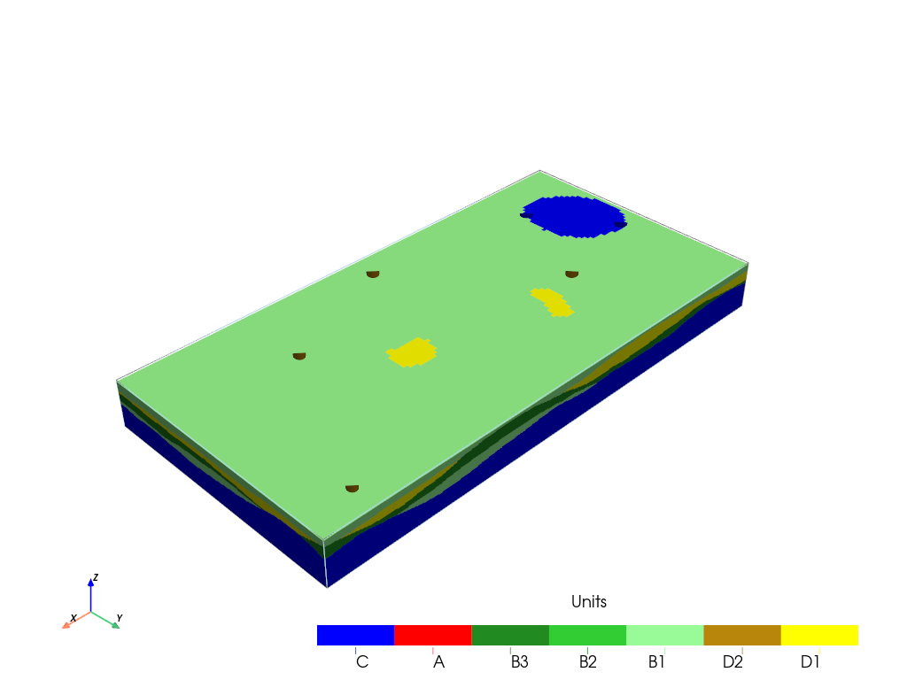
[15]:
p=pv.Plotter()
T1.plot_bhs(plotter=p)
T1.plot_units(iu=0, plotter=p, slicex=(0.15, 0.85), slicey=(0.2, 0.8))
p.show()
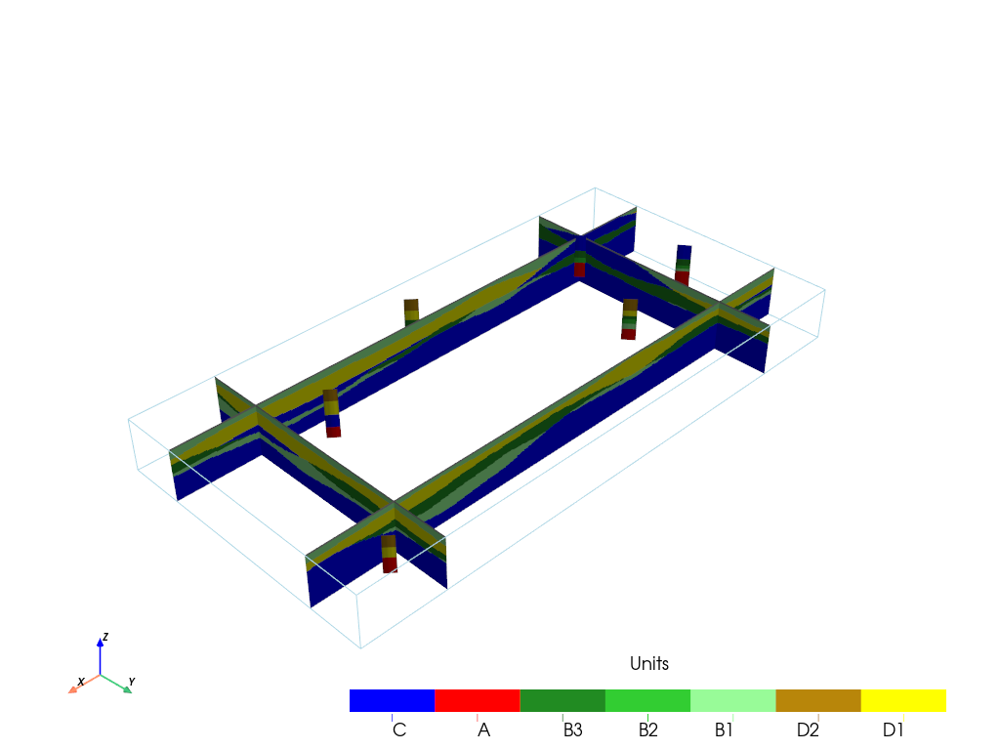
[16]:
T1.compute_facies(1, verbose_methods=2)
### Unit D: facies simulation with SubPile method ####
SubPile filling method, nothing happened
Time elapsed 0.0 s
### Unit C: facies simulation with SIS method ####
### Unit C - realization 0 ###
Some errors have been found
Some facies were found inside units where they shouldn't be
### List of errors ####
Facies basement: 1 points
Only one facies covmodels for multiples facies, adapt sill to right proportions
simulateIndicator3D: Geos-Classic running... [VERSION 2.1 / BUILD NUMBER 20251212 / OpenMP 7 thread(s)]
simulateIndicator3D: Geos-Classic run complete
Time elapsed 1.18 s
### Unit B: facies simulation with SubPile method ####
SubPile filling method, nothing happened
Time elapsed 0.0 s
### Unit A: facies simulation with homogenous method ####
### Unit A - realization 0 ###
Time elapsed 0.0 s
### Unit D2: facies simulation with SIS method ####
### Unit D2 - realization 0 ###
Only one facies covmodels for multiples facies, adapt sill to right proportions
simulateIndicator3D: Geos-Classic running... [VERSION 2.1 / BUILD NUMBER 20251212 / OpenMP 7 thread(s)]
simulateIndicator3D: Geos-Classic run complete
Time elapsed 1.36 s
### Unit D1: facies simulation with SIS method ####
### Unit D1 - realization 0 ###
Only one facies covmodels for multiples facies, adapt sill to right proportions
simulateIndicator3D: Geos-Classic running... [VERSION 2.1 / BUILD NUMBER 20251212 / OpenMP 7 thread(s)]
simulateIndicator3D: Geos-Classic run complete
Time elapsed 1.61 s
### Unit B3: facies simulation with SIS method ####
### Unit B3 - realization 0 ###
Only one facies covmodels for multiples facies, adapt sill to right proportions
simulateIndicator3D: Geos-Classic running... [VERSION 2.1 / BUILD NUMBER 20251212 / OpenMP 7 thread(s)]
simulateIndicator3D: Geos-Classic run complete
Time elapsed 0.72 s
### Unit B2: facies simulation with SIS method ####
### Unit B2 - realization 0 ###
Only one facies covmodels for multiples facies, adapt sill to right proportions
simulateIndicator3D: Geos-Classic running... [VERSION 2.1 / BUILD NUMBER 20251212 / OpenMP 7 thread(s)]
simulateIndicator3D: Geos-Classic run complete
Time elapsed 0.71 s
### Unit B1: facies simulation with SIS method ####
### Unit B1 - realization 0 ###
Only one facies covmodels for multiples facies, adapt sill to right proportions
simulateIndicator3D: Geos-Classic running... [VERSION 2.1 / BUILD NUMBER 20251212 / OpenMP 7 thread(s)]
simulateIndicator3D: Geos-Classic run complete
Time elapsed 0.73 s
### 6.32: Total time elapsed for computing facies ###
[17]:
T1.plot_facies()
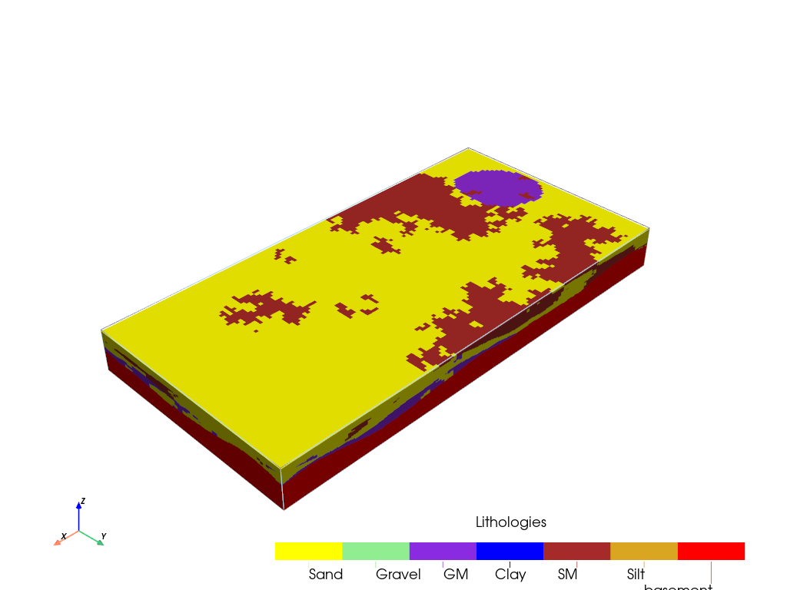
[18]:
T1.plot_facies(0,0,inside_units=[C])
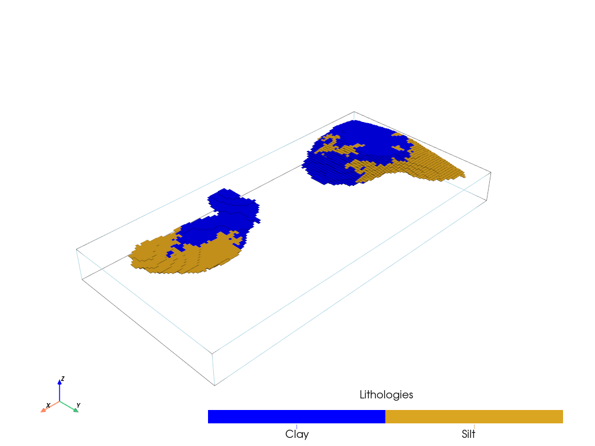
[19]:
#prop hd
ix = np.arange(0, nx*sx+0, sx)
n = len(ix)
x_hd = np.array((ix, np.ones(n)*5, np.ones(n)*-10)).T
v = np.ones(n)*-1
[20]:
permea.x = None
permea.v = None
[21]:
permea.add_hd(x_hd, v)
[22]:
T1.compute_prop(1)
### 1 K property models will be modeled ###
homogenous method chosen ! Warning: Some HD can be not respected
simulate3D: WARNING: deprecated function, use function `simulate` instead
homogenous method chosen ! Warning: Some HD can be not respected
simulate3D: WARNING: deprecated function, use function `simulate` instead
simulate3D: WARNING: deprecated function, use function `simulate` instead
simulate3D: WARNING: deprecated function, use function `simulate` instead
simulate3D: WARNING: deprecated function, use function `simulate` instead
simulate3D: WARNING: deprecated function, use function `simulate` instead
simulate3D: WARNING: deprecated function, use function `simulate` instead
simulate3D: WARNING: deprecated function, use function `simulate` instead
simulate3D: WARNING: deprecated function, use function `simulate` instead
simulate3D: WARNING: deprecated function, use function `simulate` instead
simulate3D: WARNING: deprecated function, use function `simulate` instead
simulate3D: WARNING: deprecated function, use function `simulate` instead
simulate3D: WARNING: deprecated function, use function `simulate` instead
simulate3D: WARNING: deprecated function, use function `simulate` instead
simulate3D: WARNING: deprecated function, use function `simulate` instead
simulate3D: WARNING: deprecated function, use function `simulate` instead
simulate3D: WARNING: deprecated function, use function `simulate` instead
### 1 K models done
[23]:
T1.plot_units(slicex=0.5, slicey=0.5, slicez=0.5)
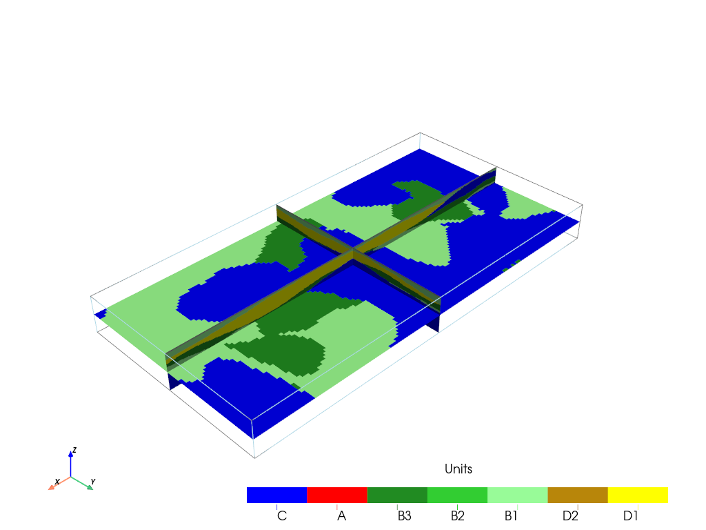
[24]:
T1.plot_prop("K",0, slicex=0.5,slicey=0.5,slicez=0.5)
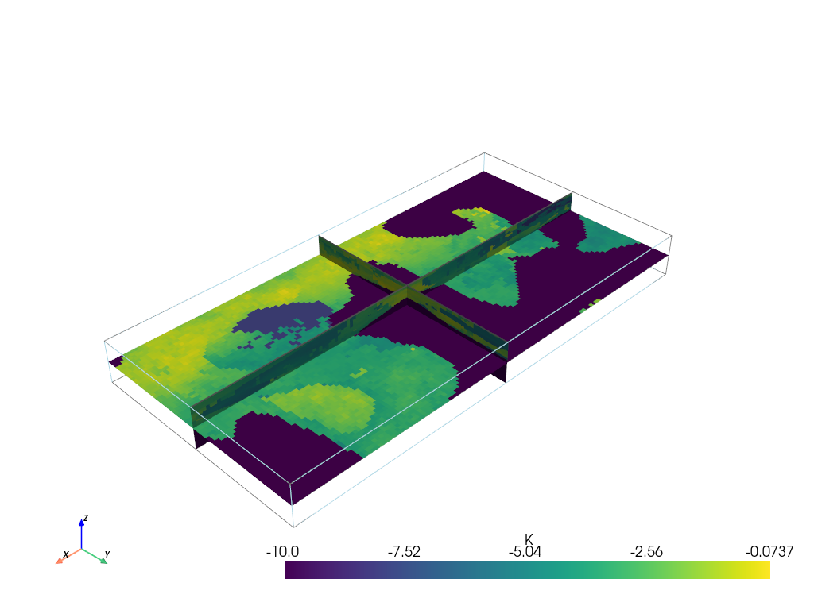
[25]:
T1.plot_mean_prop("K")
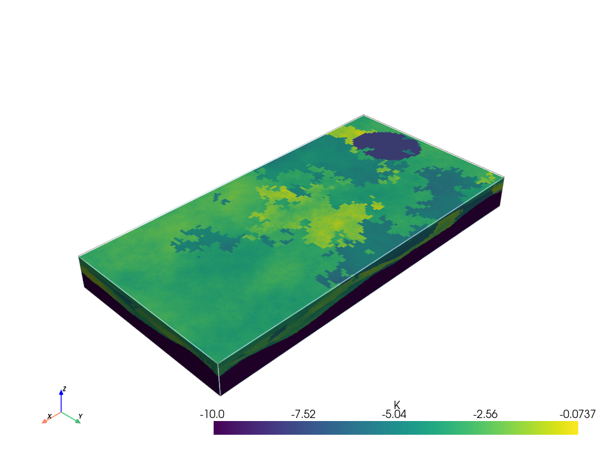
Inference¶
remove boreholes create new ones try to infer parameters
[26]:
T1.rem_all_bhs()
T1.erase_hd()
Standard boreholes removed
Fake boreholes removed
Geological map boreholes removed
Hard data reset
[27]:
n = 50
x_positions=(np.random.random(size=n) - x0)*x1
y_positions=(np.random.random(size=n) - y0)*y1
l_bhs=T1.make_fake_bh(x_positions, y_positions)[0][0]
[ ]:
i = 0
for bh in l_bhs:
bh.set_ID(f"bh_{i}")
i += 1
[35]:
T1.add_bh(l_bhs)
Borehole bh_0 goes below model limits, borehole bh_0 depth cut
Borehole bh_0 added
Borehole bh_1 goes below model limits, borehole bh_1 depth cut
Borehole bh_1 added
Borehole bh_2 goes below model limits, borehole bh_2 depth cut
Borehole bh_2 added
Borehole bh_3 goes below model limits, borehole bh_3 depth cut
Borehole bh_3 added
Borehole bh_4 goes below model limits, borehole bh_4 depth cut
Borehole bh_4 added
Borehole bh_5 goes below model limits, borehole bh_5 depth cut
Borehole bh_5 added
Borehole bh_6 goes below model limits, borehole bh_6 depth cut
Borehole bh_6 added
Borehole bh_7 goes below model limits, borehole bh_7 depth cut
Borehole bh_7 added
Borehole bh_8 goes below model limits, borehole bh_8 depth cut
Borehole bh_8 added
Borehole bh_9 goes below model limits, borehole bh_9 depth cut
Borehole bh_9 added
Borehole bh_10 goes below model limits, borehole bh_10 depth cut
Borehole bh_10 added
Borehole bh_11 goes below model limits, borehole bh_11 depth cut
Borehole bh_11 added
Borehole bh_12 goes below model limits, borehole bh_12 depth cut
Borehole bh_12 added
Borehole bh_13 goes below model limits, borehole bh_13 depth cut
Borehole bh_13 added
Borehole bh_14 goes below model limits, borehole bh_14 depth cut
Borehole bh_14 added
Borehole bh_15 goes below model limits, borehole bh_15 depth cut
Borehole bh_15 added
Borehole bh_16 goes below model limits, borehole bh_16 depth cut
Borehole bh_16 added
Borehole bh_17 goes below model limits, borehole bh_17 depth cut
Borehole bh_17 added
Borehole bh_18 goes below model limits, borehole bh_18 depth cut
Borehole bh_18 added
Borehole bh_19 goes below model limits, borehole bh_19 depth cut
Borehole bh_19 added
Borehole bh_20 goes below model limits, borehole bh_20 depth cut
Borehole bh_20 added
Borehole bh_21 goes below model limits, borehole bh_21 depth cut
Borehole bh_21 added
Borehole bh_22 goes below model limits, borehole bh_22 depth cut
Borehole bh_22 added
Borehole bh_23 goes below model limits, borehole bh_23 depth cut
Borehole bh_23 added
Borehole bh_24 goes below model limits, borehole bh_24 depth cut
Borehole bh_24 added
Borehole bh_25 goes below model limits, borehole bh_25 depth cut
Borehole bh_25 added
Borehole bh_26 goes below model limits, borehole bh_26 depth cut
Borehole bh_26 added
Borehole bh_27 goes below model limits, borehole bh_27 depth cut
Borehole bh_27 added
Borehole bh_28 goes below model limits, borehole bh_28 depth cut
Borehole bh_28 added
Borehole bh_29 goes below model limits, borehole bh_29 depth cut
Borehole bh_29 added
Borehole bh_30 goes below model limits, borehole bh_30 depth cut
Borehole bh_30 added
Borehole bh_31 goes below model limits, borehole bh_31 depth cut
Borehole bh_31 added
Borehole bh_32 goes below model limits, borehole bh_32 depth cut
Borehole bh_32 added
Borehole bh_33 goes below model limits, borehole bh_33 depth cut
Borehole bh_33 added
Borehole bh_34 goes below model limits, borehole bh_34 depth cut
Borehole bh_34 added
Borehole bh_35 goes below model limits, borehole bh_35 depth cut
Borehole bh_35 added
Borehole bh_36 goes below model limits, borehole bh_36 depth cut
Borehole bh_36 added
Borehole bh_37 goes below model limits, borehole bh_37 depth cut
Borehole bh_37 added
Borehole bh_38 goes below model limits, borehole bh_38 depth cut
Borehole bh_38 added
Borehole bh_39 goes below model limits, borehole bh_39 depth cut
Borehole bh_39 added
Borehole bh_40 goes below model limits, borehole bh_40 depth cut
Borehole bh_40 added
Borehole bh_41 goes below model limits, borehole bh_41 depth cut
Borehole bh_41 added
Borehole bh_42 goes below model limits, borehole bh_42 depth cut
Borehole bh_42 added
Borehole bh_43 goes below model limits, borehole bh_43 depth cut
Borehole bh_43 added
Borehole bh_44 goes below model limits, borehole bh_44 depth cut
Borehole bh_44 added
Borehole bh_45 goes below model limits, borehole bh_45 depth cut
Borehole bh_45 added
Borehole bh_46 goes below model limits, borehole bh_46 depth cut
Borehole bh_46 added
Borehole bh_47 goes below model limits, borehole bh_47 depth cut
Borehole bh_47 added
Borehole bh_48 goes below model limits, borehole bh_48 depth cut
Borehole bh_48 added
Borehole bh_49 goes below model limits, borehole bh_49 depth cut
Borehole bh_49 added
[ ]:
[36]:
# save model
ArchPy.inputs.save_project(T1)
Project saved successfully
[36]:
True
[29]:
T1.reprocess()
Hard data reset
##### ORDERING UNITS #####
Pile P1: ordering units
Stratigraphic units have been sorted according to order
Pile PD: ordering units
Stratigraphic units have been sorted according to order
Pile PB: ordering units
Stratigraphic units have been sorted according to order
hierarchical relations set
## Computing distributions for Normal Score Transform ##
Processing ended successfully
Interface for manual inference¶
In ArchPy, inference can be made on the surface only (stratigraphic units). For this ArchPy.infer contain several useful functions.
[30]:
%matplotlib widget
import ArchPy.infer as api
cm = gcm.CovModel1D(elem=[])
Cm2fit allow to design a variogram (covariance) function on a specific given ax
Important: Note that the interactive widgets need to be activated in order to work. Nothing happens at first. You just need to click on the button or move any slider. Modifications are made “on-change”.
[31]:
fig, ax = plt.subplots()
test = api.Cm2fit()
test.fit()
[32]:
plt.close()
Var_exp() is a function to compute experimental variogram
[33]:
%matplotlib widget
fig, ax = plt.subplots()
ev_obj = api.Var_exp(np.array([B.surface.x, B.surface.y]).T, B.surface.z, ax=ax, hmax_lim=100)
ev_obj.fit()
[34]:
plt.close()
[35]:
cm2d = gcm.CovModel2D(elem=[("cubic", {"w":1, "r":[10, 50]})], alpha=45)
ref_2d = geone.multiGaussian.multiGaussianRun(cm2d, (100, 100), output_mode="array")
grf2D: do preliminary computation...
grf2D: compute circulant embedding...
grf2D: embedding dimension: 256 x 256
grf2D: compute FFT of circulant matrix...
[36]:
%matplotlib inline
plt.imshow(ref_2d[0])
plt.show()
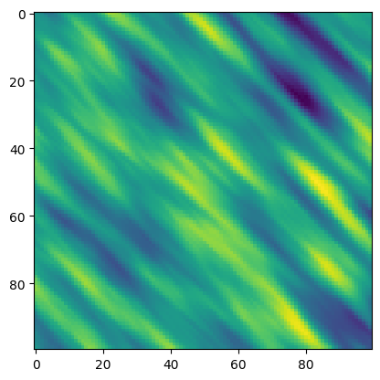
[37]:
X,Y =np.meshgrid(np.arange(100), np.arange(100))
xu = np.array([X.flatten(), Y.flatten()]).T
[38]:
%matplotlib widget
fig, ax = plt.subplots()
ev2d = api.Var_exp(xu[::16], ref_2d.flatten()[::16], ax=ax)
ev2d.fit()
ax.legend()
[38]:
<matplotlib.legend.Legend at 0x2671897d670>
[39]:
plt.close()
[40]:
cm = gcm.CovModel2D(elem=[("cubic", {"w":np.nan, "r":[np.nan, np.nan]})])
infer_surface is a function to compute experimental variogram and fit a variogram model (combination of Var_exp() and Cm2fit() classes). The input is an ArchPy table (Arch_table class) and a Unit object. It outputs Var_exp and Cm2fit objects. Automatic inference is possible by setting the auto parameter to True.
[41]:
api.infer_surface(T1, B, auto=False)
[41]:
(<ArchPy.infer.Var_exp at 0x2672cb2cd40>,
<ArchPy.infer.Cm2fit at 0x2672ccab320>)
[42]:
plt.close()
Fit surfaces¶
fit_surfaces is all-in-one function to estimate surface parameters of a given ArchPy table (Arch_table class).
First an experimental variogram must be chosen, then press continue and after the model variogram can be selected.
When choosing auto option, an optimal variogram is selected and directly added.
[ ]:
%matplotlib widget
api.fit_surfaces(T1, hmax=100)
[44]:
plt.close()
estimate_surf_params is an alias to call fit_surfaces from the Arch_Table directly
[45]:
%matplotlib inline
T1.estimate_surf_params(auto=True, hmax=50)
### SURFACE PARAMETERS ESTIMATION ###
### UNIT : D ###
Not enough data points
Default covmodel added
Nothing has changed
### UNIT : C ###
Not enough data points
Default covmodel added
Nothing has changed
### UNIT : B ###
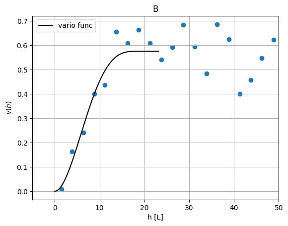
### UNIT : A ###
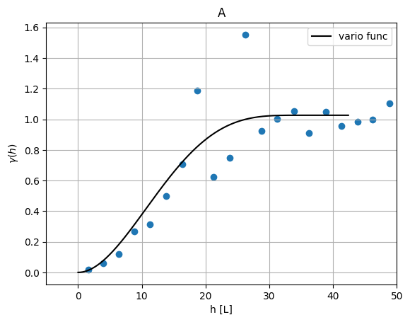
### UNIT : D2 ###
Not enough data points
Default covmodel added
Nothing has changed
### UNIT : D1 ###
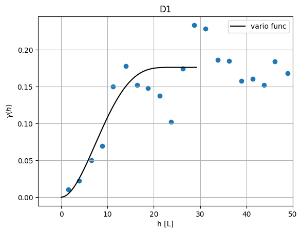
### UNIT : B3 ###
Not enough data points
Default covmodel added
Nothing has changed
### UNIT : B2 ###
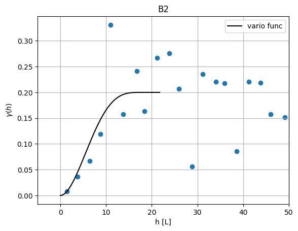
### UNIT : B1 ###
Not enough data points
Default covmodel added
Nothing has changed